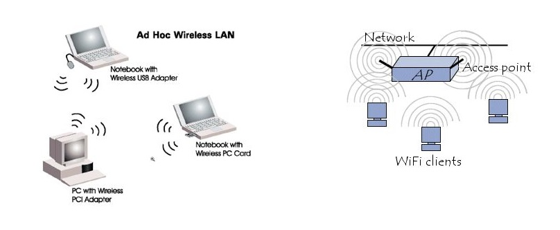
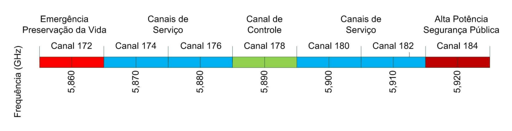
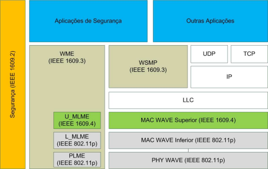
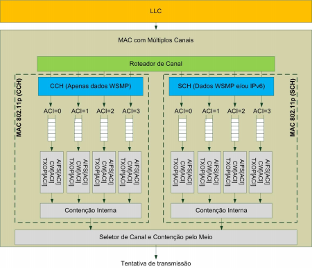

Universidade Federal do Rio de Janeiro
Redes 1 - Luís Henrique M. K. Costa
Redes Veiculares Ad-Hoc (Vehicular Ad-Hoc Networks - VANETs) são uma classe especial de Redes Móveis Ad-Hoc (Mobile Ad-Hoc Networks - MANETs) formadas por veículos e equipamentos de rodovias que possuem tecnologia wireless. A comunicação nas VANETs é feita entre dois automóveis e/ou entre veículos e unidades laterais à pista (placas, sinais, paradais, etc), formando um sistema de transporte inteligente, capaz de trocar informações acerca do tráfego e das condições da pista praticamente em tempo real.
Redes veiculares podem usar qualquer tecnologia de rede sem fio como base. As mais comuns são as tecnologias de rádio de curto alcance, como a WLAN (padrão IEEE 802.11 ou ZigBee). Além disso, as tecnologias de celular ou LTE podem ser usadas para as VANETs. Existem três arquiteturas principais de redes veiculares: ad hoc pura, infraestruturada e híbrida.
Grande parte das WLANs são redes com infra-estrutura. A transferência de dados acontece sempre entre uma estação e um ponto de acesso (Access Point). Esses pontos de acesso são nós especiais que permitem captar e retransmitir as mensagens enviadas pelas estações. Nunca uma estação se comunica diretamente com outra estação. O ponto de acesso também pode funcionar como uma ponte para outra rede. Um problema é quando a infra-estrutura da rede é destruida, como por exemplo por um terremoto, deixando a rede inutilizada. Redes de telefonia móvel são um caso típico de redes com infra-estrutura.
As redes Ad Hoc não necessitam de nenhuma infra-estrutura para funcionar, sendo possível cada estação se comunicar com outra sem ajuda de um intermediário. Como nenhum ponto de acesso é necessário para controlar o acesso ao meio, existe uma barreira geográfica: uma estação X só pode se comunicar com uma estação Y se Y estiver dentro do raio de ação de X (onde o sinal desta estação chegue com um mínimo de clareza), ou se existir uma ou mais estações entre X e Y que possam encaminhar a mensagem. Numa rede Ad Hoc, a complexidade das estações é alta porque cada estação tem que implementar mecanismos de acesso ao meio, mecanismos para controlar problemas com “estações escondidas” e mecanismos para prover a qualidade de serviço desejada.
Muitas VANETs usam o IEEE 802.11 que é uma típica rede com infra-estrutura, mas que pode suportar uma rede Ad Hoc.
A tecnologia mais recente para essa rede sem fio é a comunicação por luz visível (VLC). Usando uma fonte de luz ligada e desligada extremamente rapidamente através de um computador, podemos enviar mensagens para um receptor capaz de interpretar esse sinal. A rápida adoção de lâmpadas LED criou uma enorme oportunidade para o VLC junto com o problema do congestionamento do espectro de rádio utilizado pelos sistemas de rádio Wi-Fi e celular. Abaixo, temos um exemplo experimental do uso de VLC em comunicação veicular.
As aplicações de VANETs são comumentes divididas em três categorias:
Os Estados Unidos da América foram a vanguarda nos esforços para padronizar as redes veículares. Em 1999, a FCC ( Federal Communications Commission) reservou 75MHz do espectro de frequências na faixa de 5,9GHz para as aplicações chamadas DSRC ( Dedicated Short Range Communications). A faixa DSRC é licenciada, porém livre; essa faixa é restrita à aplicação e às tecnologias utilizadas nela, mas não existe cobrança pelo seu uso. Ao redor do mundo também existem outros esforços com o objetivo de reservar partes do espectro da radiofrequência para comunicações veiculares.
A imagem abaixo representa a alocações de canais DSRC: 
A arquitetura WAVE (Wireless Access to Vehicular Environment) foi desenvolvida pelo IEEE dentro do grupo de trabalho IEEE 802.11. Seu objetivo é padronizar as comunicações veiculares no grupo IEEE 802.11. O padrão é conhecido como IEEE 802.11p WAVE e é definido em seis documentos:
Os documentos IEEE 1609 definem um conjunto de padrões para a comunicação em ambientes WAVE. Seu principal objetivo é prover um conjunto de interfaces padrão para os fabricantes de automóveis. Isso é importante pois torna possivel que exista interoperabilidade entre todos os dispositivos fabricados. O padrão deve considerar também que os veículos se deslocam a altas velocidades e portante as cominicações devem ser concluidas em pequenos intervalos de tempo, atendendo assim os requisitos dos Sistemas Inteligentes de Transporte. A tabela abaixo descreve as nomenclaturas usadas nos documentos da família IEEE 1609:
| Dispositivo WAVE | Dispositivo que implementa a subcamada MAC e a camada física de acordo com o padrao WAVE |
|---|---|
|
Unidade de Bordo
(On Board Unit – OBU) |
Dispositivo WAVE movel capaz de trocar informação com outras OBUs ou RSUs |
|
Unidades de Acostamento
(Road Side Unit – RSU) |
Dispositivo WAVE estacionário capaz de trocar informação com outras OBUs |
|
Gerente de Recursos
(Resources Manager - RM) |
Aplicação WAVE tipicamente executava nas RSUs |
|
Processador de Comandos de Recursos
(Resource Command Processor - RCP) |
Aplicação WAVE executadas em uma OBU |
|
Aplicações do Gerente de Recursos
(Resource Manager Applications – RMAs) |
Aplicações executadas em dispositivos remotamente conectados a RSUs |
|
WBSS
(WAVE Basic Service Set) |
Conjunto de estações WAVE consistindo de um provedor de WBSS e zero ou mais usuarios de WBSS |
|
WSM
(WAVE Short Message) |
Mensagem curta WAVE, enviada pelo protocolo WSMP |
| Provedor de WBSS | Dispositivo iniciador de um WBSS ou emissor de WSMs |
| Usuário de WBSS | Dispositivo associado a um WBSS ou destinatario de WSMs |
Na arquitetura WAVE as RSUs são, em sua maioria, dispositivos estáticos que hospedam aplicações e oferecem serviços, enquanto as OBUs executam aplicações que utilizam determinados serviços. Este padrão especifica serviços e interfaces do RM que tipicamente é uma aplicação executada em uma RSU. O RM se comunica com a aplicação RCP, executada em uma OBU. O RM se comunica também se comunica com RMAa, que são aplicações executadas em dispositivos remotamente conectados a RSUs.
O principal objetivo deste padrão é favorecer a interoperabilidade de aplicações WAVE, de forma a simplificar a OBU e assim reduzir seu custo e/ou aumentar seu desempenho. Isso ocorre pois a OBU não é obrigada a interpretar mensagens de aplicação. O processamento pode ser movido para a RSU ou para um dispositivo conectado a RSU.
O padrão IEEE P1609.2 define formatos seguros de processamento de mensagens. Ele também define as circunstâncias nas quais devem ser usadas mensagens seguras e como essas mensagens devem ser processadas, de acordo com o seu proposito. O padrão define a utilização de ferramentas de segurança tradicionais, como Infraestrutura de Chaves Publicas (PKI) e certificação.
O padrão P1609.2 define também um subconjunto das OBUs, chamados Public Safety OBUs – PSOBUs (Unidade de Bordo de Segurança Pública). As PSOBUs equipa veículos ligados à segurança pública como viaturas policiais, e são responsáveis por operar aplicações especificas relacionadas à segurança pública, como controle de sinais de trânsito.
Esse padrão especifica os serviços das camadas de controle de enlace lógico ( Logical Link Control - LLC), de rede e de transporte. A comunicação WAVE pode utilizar IPv6 ou WSMs. O padrão IEEE1609.3 também define a MIB para a pilha WAVE.
Como ilustrado na imagem acima, a pilha WAVE possui um plano de Gerenciamento e um plano de dados:
O plano de dados define os protocolos de comunicação responsáveis pelo envio de dados gerados pelas aplicações assim como tráfego gerado entre as entidades do plano de gerenciamento em máquinas diferentes, ou entre entidades de gerenciamento e aplicações. Ele consiste em quatro serviços: o LLC, protocolo de redes IPv6, os protocolos de transporte UDP e TCP, e o protocolo WSMP.
O plano de gerenciamento é encarregado pela configuração e manutenção do sistema. Os serviços do plano de dados são utilizados para a transmissão de informação entre os dispositivos. O plano de gerenciamento implementa os seguintes serviços: registro de aplicações, gerenciamento de WBSS, monitoramento da utilização de canais, configuração do IPv6, monitoramento do indicador de potência de recepção do canal e manutenção da base de dados do gerenciamento.
A arquitetura WAVE define a utilização de um canal de controle (Control Channel - CCH) e multiplos canais de serviço (Service Chanel - SCH). Ao ser inicializado, um dispositivo WAVE deve monitorar o CCH à espera de anuncios de serviço WAVE (WAVE Service Add - WSA) que contem o número do SCH a ser utilizado para um determinado serviço.
Dispositivos WAVE com apenas uma interface de rádio não são capazes de monitorar o CCH enquanto utilizam uma SCH. Nesses casos é preciso uma sincronização entre os dispositivos para que o intervalo CCH seja comum a todos. Depois de serem sincronizados esses dispositivos podem monitorar periodicamente o CCH em intervalos especificos, um intervalo CCH seguido por um intervalo SCH. A duração dos intervalos é definida pelo padrão IEEE 1609.4
A imagem abaixo representa a subcamada MAC com multiplos canais WAVE.
Os padrões IEEE P1609.4 e IEEE 802.11p definem algumas mudanças na subcamada MAC desvcita no padrão IEEE 802.11. O padrão IEEE 802.11p é uma extensão da familia de protocolos IEEE 802.11. Ele se baseia principalmente no IEEE 802.11a, porém opera na faixa DSRC (5,9GHz).O padrão 802.11p faz tres modificações principais na camada física do IEEE 802.11a. Foram evitadas muitas e grandes alterações para que não fosse necessária uma nova tecnologia de radiotransmissão para se utilizar o IEEE 802.11p.